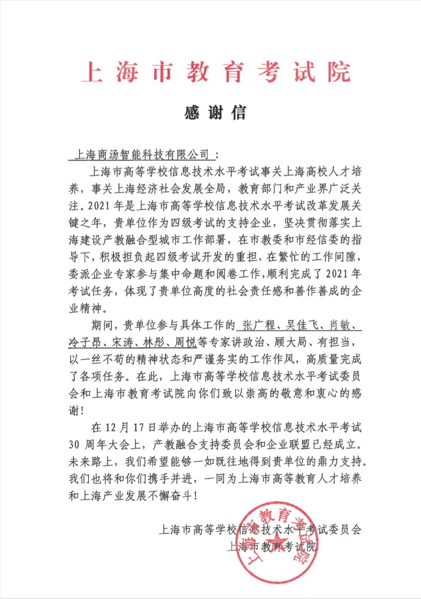
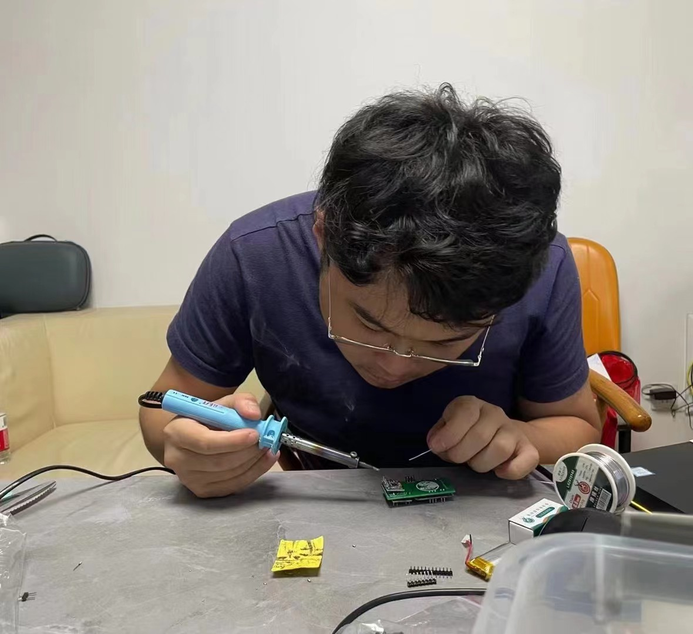
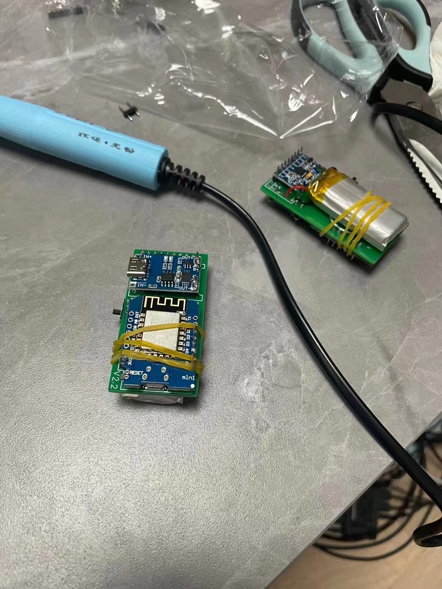
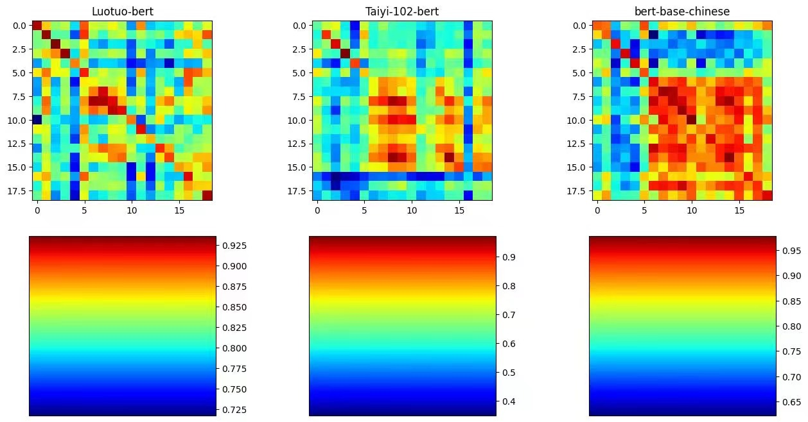

上面的摆拍照片还比较有模有样，其实现在胖了很多
邮箱: zaleng@bu.edu
微信: cubylza
手机: 15021912395
我可能是程序员？产品经理？游泳健将？
或许是一个想当大产品经理和游泳健将的程序员
我本科和硕士毕业于美国波士顿大学计算机系，非常欢迎校友们随时找我哈哈哈
目前我正在看大模型的相关可能性和机会，最近玩了一个不错的项目，叫 骆驼 感兴趣的朋友欢迎随时联系我！ 本科的时候 Derry Wijaya 算是我的NLP启蒙老师，带着我做了一些NLP相关的学习和工作！
骆驼项目发起人, 主程 2023年3月末---至今
产品委员会系统开发工程师 2022年11月末---至今
汇报 To：李诚（商汤科技联合创始人，研究总监）
商汤教育院校产品负责人（管理幅度:10+人） 2021年4月---2022年11月
汇报 To：戴娟（商汤教育总经理，现任商汤智慧语言事业部经理）
商汤科技见习研究员 2019年5月---2021年
汇报 To：李诚（商汤科技联合创始人，研究总监）
DNA实验，图论与可视化程序开发 2020年2月
汇报 To：Shilpa Garg
计算机科学系(Computer Science) 2019年末---2021年初
计算机科学系(Computer Science) 2016年---2019年末
调皮捣蛋的不得了 年头久了有点忘了



[1] Learning to mirror speaking styles incrementally
Ziang Leng*, Siyi Liu*, Derry Wijaya
on arXiv.